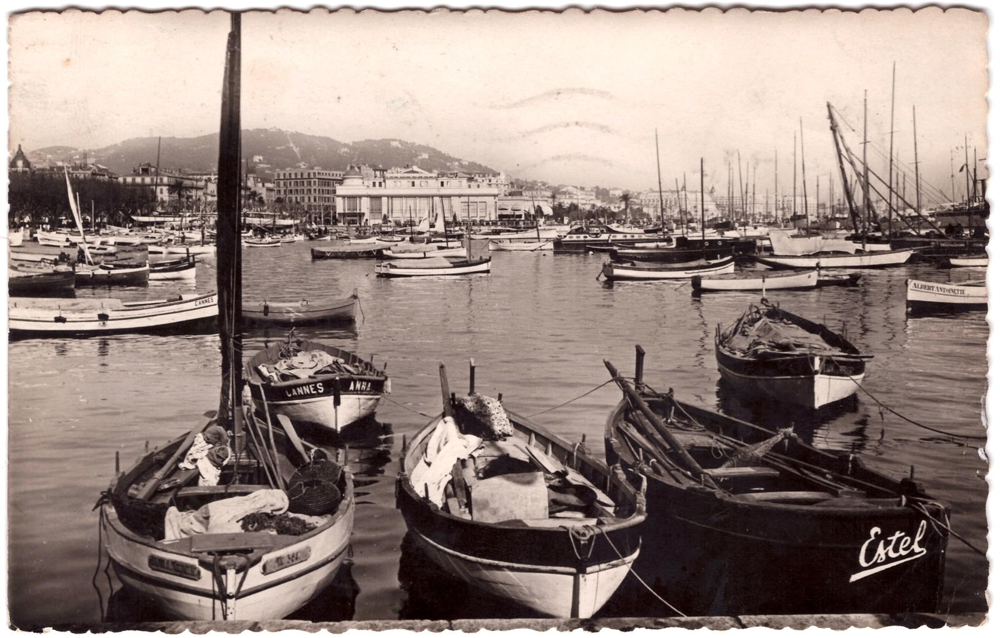
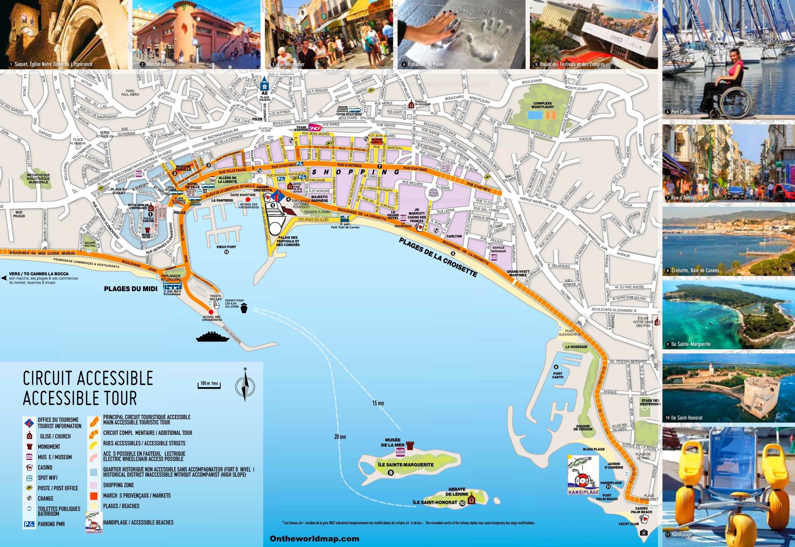

Premiers pas ...
Durant l'Antiquité, Cannes était un village de pêcheurs ligure, où circulait des légendes autour de Saint-Honorat et de l'homme au masque de fer sur les îles de Lérins (au large de la baie de Cannes). La ville pris son essor avec la construction de résidences secondaires par les aristocrates anglais et russes puis un peu plus tard des hôtels de luxe destinés aux touristes fortunés, consitituant son patrimoine architectural.
Situation géographique et culturel
Cannes est une commune française de la communauté d'agglomération Cannes Pays de Lérins située dans le département des Alpes-Maritimes, en région Provence-Alpes-Côte d'Azur, sur la Côte d'Azur dont elle est une ville phare. Les habitants sont appelés les Cannois. Dotée d'une industrie de pointe, d'un petit aéroport d'affaires, de plusieurs ports et d'un palais des congrès, ancrée dans la baie de Cannes qui est bordée par le massif de l'Esterel à l'ouest, le golfe Juan à l'Est et la mer Méditerranée. Cannes est une station balnéaire mondialement connu pour son festival du film, ou encore les NRJ Music Awards, mais également pour sa Croisette bordée de palaces.
La grande histoire du Festival de Cannes
Le festival du film ou festival de Cannes fit sa première et brève apparition (à cause du commencement de la 2nde Guerre Mondiale) en 1939 grâce au diplomate et historien français Philippe Erlanger. Le second et premier véritable festival eu lieu en 1946. C'est donc dans une ambiance d’après-guerre mondiale, que nait le Festival international du film, qui marque le début d’une grande épopée pour le cinéma mondial. Depuis sa naissance, le festival de Cannes n'a cessé de nous surprendre et s'est amélioré au fil des décennies en devenant aujourd'hui un lieu incontournable pour les pays producteurs de films.